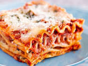

Lasagna

A Lasagna
This classic lasagna recipe is made with an easy meat sauce as the base. Layer the sauce with noodles and cheese, then bake until bubbly! This is great for feeding a big family and freezes well, too.
Ingredients
- 15 ounces ricotta cheese
- 2 cloves garlic, minced
- 1/4 cup chopped fresh parsley (preferably flat leaf), packed
- 1 tablespoon Italian seasoning
Steps to make Lasagna
- Put pasta water on to boil
- Brown the ground beef
- Cook the bell pepper, onions, garlic, add back the beef
- Transfer to medium sized pot, add tomatoes and remaining sauce ingredients to build the sauce
- Boil and drain the lasagna noodles
- Heat the oven to 375°F
- Assemble the lasagna
- Bake the Lasagna
- Cool and Serve